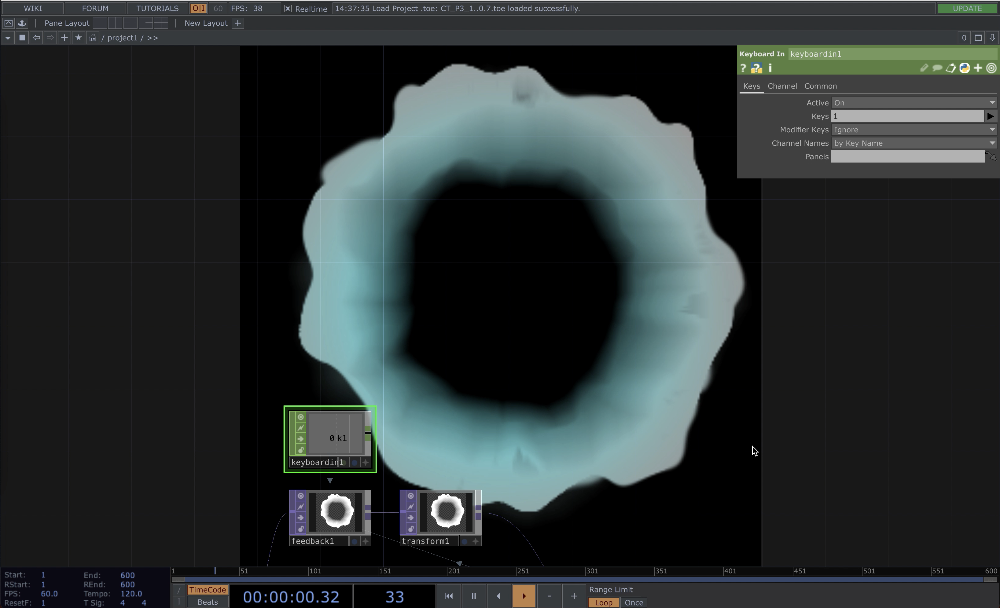
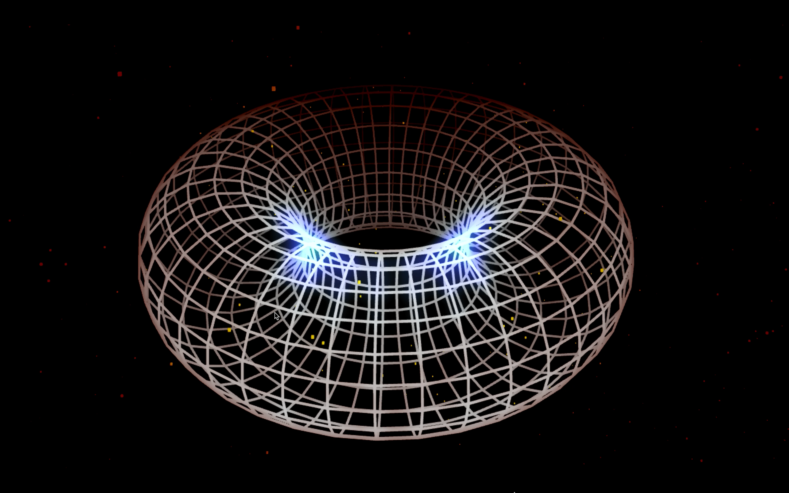

SPRING24_Project Two
inclass explore with touchdesigner_one
During the first class on this project, we were explore generation in touchdesigner. By clicking "1" on keyboard, the image will be reset and start over the generation.
👇 click the image below to view exploration one 👇
inclass explore with touchdesigner_two
During the second class on this project, we were further explore generation in touchdesigner by adding a audio-reactive feature, which the round-donut form will bounced in respond to the music.
👇 click the image below to view exploration two 👇
flowing generation_on screen
Based on the previous two exploration and the requirement of projecting the final piece onto the wall or other areas in the building, I decided to create a flowing generation that transits from black and white noisy image to black and white more clear flowing image, and, at the end, become a flowing colored image. Meanwhlie, all images/generations were react in respond to the music.
👇 click the image below to view flowing generation on screen 👇

flowing generation_projection_location_one
Initially, I decided to project the flowinig generation on a corner in the studio space. However, due to the physical condition, the environment was not complete dark, which the projection is not clear enough and the flowing direction is circular rather than flowing from up to down. In the meantime, I am not satisfied with the flowing transition by arrangement in circular order.
👇 click the image below to view flowing generation projected at location one👇

flowing generation_projection_location_two
Based on the previous exploration on projection, I decided to find another location that could better match with my requirement. I decided to move to room M4, which once the light closed, the room will immsered in full darkness. Meanwhile, I find a spot which allows better transition between each state of the flowing generation while create a visual illusion, which by the generation would look different when it was viewed from different angles.
👇 click the image below to view flowing generation projected at location two👇

Click here to return to main page